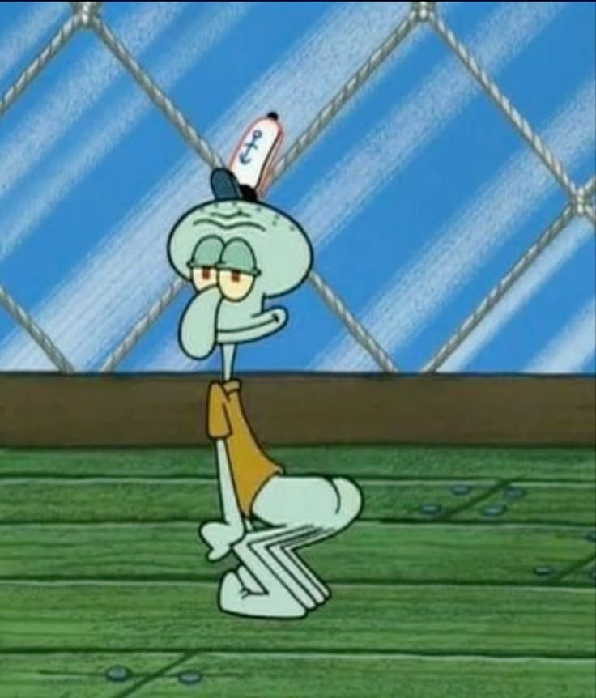

Squidward Tentacles

Squidward Q.[1] Tentacles adalah salah satu karakter utama dari SpongeBob SquarePants. Dia adalah tetangga antara SpongeBob dan Patrick Star. Squidward adalah Cephalopoda. Spesiesnya adalah gurita, menurut pencipta seri, meskipun namanya mengandung kata "squid" dan dia memiliki enam kaki bukan delapan. Squidward tinggal di sebuah bentuk rumah seperti kepala Pulau Paskah (kepala Moai).
Dia bekerja sebagai kasir di Krusty Krab, pekerjaan yang sangat dia benci. SpongeBob bekerja bersama dengan Squidward di Krusty Krab. Squidward adalah individu yang egois.
Ia juga memiliki lebih dari 500 potret diri dan delusi tentang bakatnya (seperti bermain klarinet) meskipun tidak ada di sekelilingnya menganggap dia menjadi sangat baik. Animator seri 'membuat Squidward dengan enam tentakel, percaya bahwa memberinya delapan tentakel gurita akan membuatnya terlihat terlalu terbebani dan akan terlalu sulit untuk menghidupkan'.